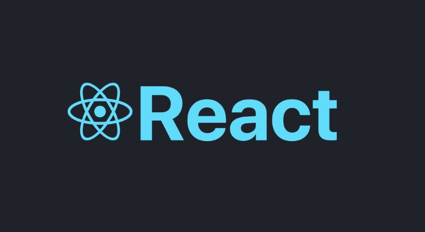
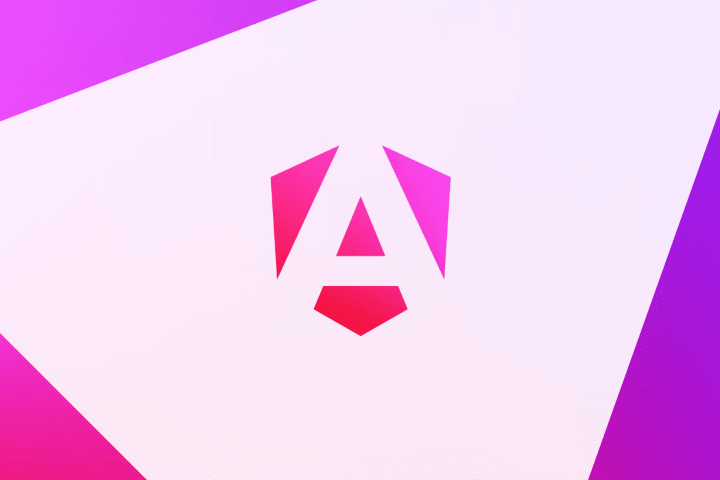
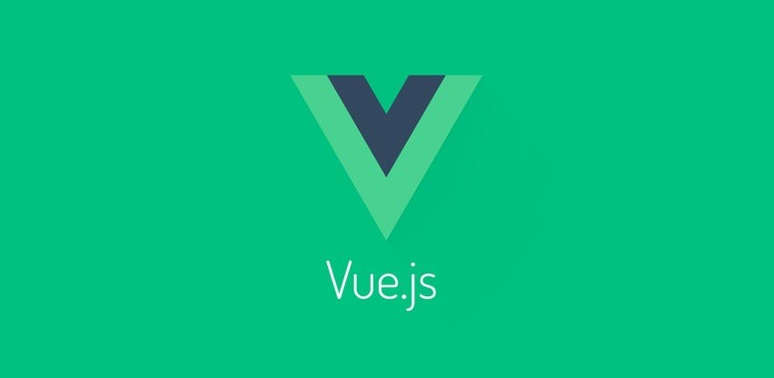
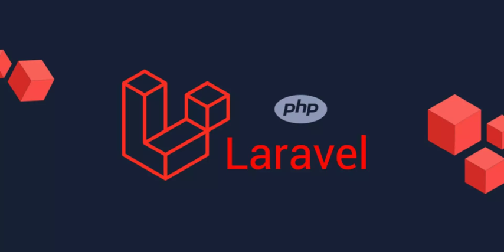
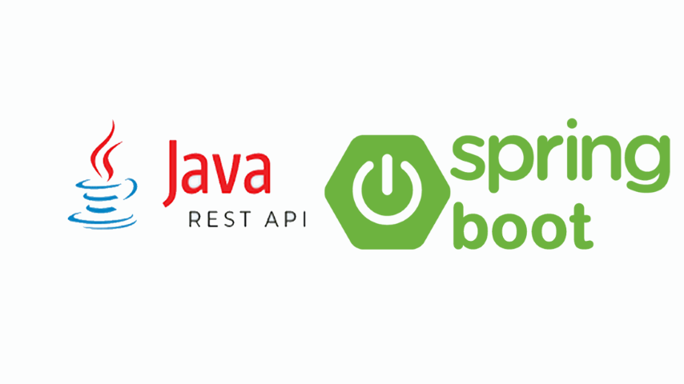
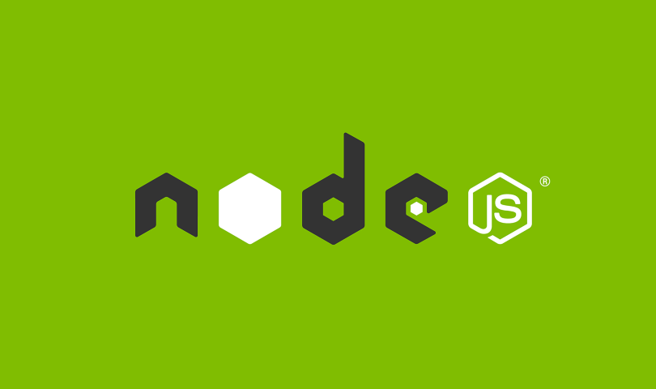

Profe Rick
Ingeniero de software con años de experiencia en la industria en puestos como desarrollador Front End, Back End y Fullstack.
Sobre Mí
Soy Ricardo Garrido, licenciado en Informática con especialidad en Ingeniería de Software.
Llevo más de años trabajando en la industria como
desarrollador
Front-End, Back-End, Fullstack y años como empresario,
ayudando a las empresas a
crear proyectos, gestionar proyectos y personal, reclutar personal de IT para
empresas,
y aplicar entrevistas técnicas.
A lo largo de los años he enseñado a personas de todas las edades, carreras y giros,
desde niños y adolescentes curiosos hasta adultos que quieren entrar a las
industria IT, desde
orientar empresarios y directivos en el negocio de tecnologías de la
información, hasta
entrenar ingenieros junior.
Me encanta enseñar y me tomo en serio el aprendizaje de cada alumno.
Soy paciente, didáctico, personalizo cada sesión a las necesidades de mis clientes/alumnos.
Siempre digo que soy el profesor que me hubiera gustado tener:
Alguien que no solo sepa programar, sino que también sepa enseñar y con
experiencia
en la industia.
Servicios
Aprende desarrollo web con un enfoque práctico y profesional.
Ofrezco mentorias/clases personalizadas de programación web completamente práctico y centrado en lo
que realmente se usa en la industria.
Enseño tecnologías como HTML, CSS, JavaScript, Git, Bootstrap entro otras (Puedes verlas aqui).
Explico de forma clara y con ejercicios hechos a la medida del alumno/cliente.
Las mentorías están disponibles todos los días del año, en horarios flexibles,
y son ideales para:
- Personas que quieren ingresar a la industria IT
- Project managers JR que buscan aprender como gestionar equipos, reclutar ingenieros, solicitar avances, medir riesgos, atención al cliente, negociación con el cliente, etc.
- Estudiantes que desean prepararse para el mundo laboral
- Empresarios y directivos que buscan empezar y/o gestionar un proyecto de IT, cotizar reclutar personal, vender proyectos, etc.
- Niños/adolescentes/jovenes que quieren explorar la informática antes de elegir una universidad o carrera
- Reclutadores JR que buscan mejorar sus habilidades de reclutamiento, conocer stacks, tecnologías, como entrevistar candidatos y elegir CV's
- Estudiantes de bootcamp que buscan ayuda extra
Otros servicios:
Además, ofrezco asesoramiento para entrevistas técnicas, orientación a padres sobre opciones educativas, y apoyo en proyectos de software reales.
Te ayudo a reclutar:
- Maquetadores
- Desarrolladores Frontend
- Desarrolladores Backend
- Desarrolladores Fullstack
- Diseñadores UX/UI
- Reclutadores IT
- Project Managers
- Community Managers
He trabajado con reclutadores y sé lo que buscan. Juntos armamos un CV que muestre lo mejor de ti, aunque estés empezando o cambiando de carrera.
Desarrollador Frontend
Especialistas en desarrollo de interfaces de usuario modernas y responsivas
-

Desarrollador React
Desarrolla interfaces interactivas y dinámicas con componentes reutilizables.
-

Desarrollador Angular
Crea aplicaciones web estructuradas y escalables con arquitectura MVC y TypeScript.
-

Desarrollador Vue.js
Construye interfaces ligeras y reactivas con una curva de aprendizaje sencilla y flexible.
Desarrollador Backend
Especialistas en desarrollo del lado del servidor y arquitectura de aplicaciones
-
Desarrollador Ruby on Rails
Desarrolla aplicaciones web completas rápidamente con un enfoque en la productividad.
-

Desarrollador PHP - Laravel
Crea aplicaciones web robustas y seguras con un framework elegante y sintaxis limpia y practica.
-
Desarrollador Python - Django
Desarrolla sitios web potentes y mantenibles con un enfoque en la rapidez, la seguridad y la practicidad.
-

Desarrollador Java - Springboot
Construye aplicaciones empresariales escalables con una arquitectura sólida y modular.
-
Desarrollador C# - .NET
Desarrolla soluciones web y de escritorio eficientes con una plataforma versátil y moderna.
-

Desarrollador Node.js
Crea aplicaciones rápidas y escalables del lado del servidor usando JavaScript asíncrono de toda la vida.
Mentorías
Diseñadas para personas que quieren entrar al mundo tech sin rodeos.
- HTML 5
- CSS 3
- JavaScript
- SASS
- Bootstrap 5
- Vue.js
- PHP
- Laravel
- Git
- Github
- SQL
Todo lo que enseño está pensado para que puedas conseguir trabajo, mejorar en el que ya
tienes, vender proyectos, reclutar ingenieros, project managers, cotizar proyectos, calcular
tiempos de entrega, desarrollar productos digitales etc.
Mis mentorias son prácticas, actualizadas y enfocadas en lo que
realmente se usa en la industria. Te explico paso a paso, con ejemplos reales y
acompañamiento cercano.
Aprendes como se trabaja en la vida real.
- HTML 5
- CSS 3
- JavaScript
- SASS
- Bootstrap
- Vue.js
- PHP
- Laravel
- Git y Github
- JSON
- SQL
<!-- Documento HTML5, la estructura principal de toda página web -->
<!DOCTYPE html>
<html lang="es">
<head>
<!-- Aquí van los archivos que dan estilo y funcionalidad a la página -->
<meta charset="UTF-8"> <!-- Soporte para ñ, tildes, etc. -->
<title>Mi primera página</title>
<!-- Estilo en linea (no recomendado para proyectos grandes) -->
<style>
body {
background: #fafafa;
color: #333;
font-family: sans-serif;
}
</style>
</head>
<body>
<!-- Aquí ponemos todo el contenido visible de la página -->
<h1>¡Hola mundo!</h1>
<p>Esta es mi primera página con HTML 😊</p>
<!-- Código JavaScript simple -->
<script>
console.log("Bienvenido al mundo web");
</script>
</body>
</html>
/* Variables reutilizables */
:root {
--color-primario: #4caf50;
--color-texto: #222;
--espaciado: 1.5rem;
}
/* Estilos base */
body {
font-family: 'Segoe UI', sans-serif;
color: var(--color-texto);
margin: 0;
padding: var(--espaciado);
}
/* Botón animado */
.boton {
background-color: var(--color-primario);
color: white;
border: none;
padding: 0.75rem 1.5rem;
border-radius: 0.5rem;
cursor: pointer;
animation: entrada 0.6s ease-out both;
transition: background 0.3s;
}
.boton:hover {
background-color: darkgreen;
}
/* Animación: fade + slide */
@keyframes entrada {
from {
opacity: 0;
transform: translateY(20px);
}
to {
opacity: 1;
transform: translateY(0);
}
}
/* Media query: pantallas pequeñas */
@media (max-width: 767px) {
body {
background: #f9f9f9;
}
.boton {
width: 100%;
}
}
// Esperar a que el DOM (la página web) esté listo
document.addEventListener("DOMContentLoaded", () => {
const boton = document.querySelector(".boton");
const mensaje = document.querySelector("#mensaje");
// Variables y función moderna (arrow function)
let clicks = 0;
boton.addEventListener("click", () => {
clicks++;
mensaje.textContent = `Haz hecho click ${clicks} ${clicks === 1 ? 'vez' : 'veces'}.`;
// Cambiar estilo dinámicamente
boton.style.transform = "scale(1.05)";
setTimeout(() => boton.style.transform = "scale(1)", 150);
});
// Tip: podrías guardar los clicks en localStorage para mantenerlos al recargar
});
// Variables para colores y tamaños
$color-primario: #4a90e2;
$color-texto: #333;
$espaciado: 1rem;
// Mixin para media queries reutilizable
@mixin respond($breakpoint) {
@if $breakpoint == tablet {
@media (max-width: 768px) { @content; }
} @else if $breakpoint == mobile {
@media (max-width: 480px) { @content; }
}
}
// Componente base
.card {
background: white;
padding: $espaciado;
border-radius: 0.5rem;
box-shadow: 0 4px 10px rgba(0, 0, 0, 0.1);
color: $color-texto;
h2 {
color: $color-primario;
margin-bottom: 0.5rem;
}
p {
font-size: 1rem;
line-height: 1.5;
}
// Responsive usando mixin
@include respond(mobile) {
padding: 0.5rem;
h2 {
font-size: 1.2rem;
}
}
}
// Otra clase que hereda estilos básicos
.card-destacada {
@extend .card;
border-left: 4px solid $color-primario;
}
<!DOCTYPE html>
<html lang="es">
<head>
<meta charset="UTF-8" />
<title>Bootstrap Demo</title>
<link href="https://cdn.jsdelivr.net/npm/bootstrap@5.3.3/dist/css/bootstrap.min.css" rel="stylesheet">
<link href="https://cdn.jsdelivr.net/npm/bootstrap-icons/font/bootstrap-icons.css" rel="stylesheet">
</head>
<body class="bg-light p-4">
<div class="container text-center shadow p-4 rounded bg-white">
<h1 class="mb-3"><i class="bi bi-lightning-charge"></i> Bootstrap Rocks!</h1>
<p class="lead">Diseño rápido, responsivo y elegante con clases listas para usar.</p>
<button class="btn btn-primary" data-bs-toggle="collapse" data-bs-target="#extraInfo">
Ver más
</button>
<div id="extraInfo" class="collapse mt-3">
<div class="alert alert-info">
Este contenido se muestra con data-bs-toggle="collapse".
</div>
</div>
<div class="row mt-4">
<div class="col-md-6">
<div class="border p-3 rounded">Columna 1</div>
</div>
<div class="col-md-6">
<div class="border p-3 rounded">Columna 2</div>
</div>
</div>
</div>
<script src="https://cdn.jsdelivr.net/npm/bootstrap@5.3.3/dist/js/bootstrap.bundle.min.js"></script>
</body>
</html>
<template>
<div class="counter">
<h1 :class="{ danger: count > 5 }">Contador: {{ count }} </h1>
<button @click="count++">Incrementar </button>
<button @click="reset">Reiniciar </button>
<p v-if="isHigh">¡Ya pasaste de 5! </p>
</div>
</template>
<script setup>
import { ref, computed } from 'vue';
const count = ref(0);
const isHigh = computed(() => count.value > 5);
function reset() {
count.value = 0;
}
</script>
<style scoped>
.counter {
text-align: center;
margin: 2rem auto;
transition: all 0.3s ease;
}
button {
margin: 0.5rem;
padding: 0.5rem 1rem;
}
.danger {
color: red;
animation: pulse 0.5s ease;
}
@keyframes pulse {
0% { transform: scale(1); }
50% { transform: scale(1.1); }
100% { transform: scale(1); }
}
</style>
<?php
// Función para generar una lista de elementos
function generarLista($arreglo) {
echo "<ul>"; // Inicia una lista no ordenada
foreach ($arreglo as $elem) {
echo "<li>" . $elem . "</li>"; // Imprime cada elemento de la lista
}
echo "</ul>"; // Cierra la lista
}
// Un arreglo con algunos elementos
$frutas = ["Manzana", "Banano", "Cereza", "Fresa", "Kiwi"];
?>
<!DOCTYPE html>
<html lang="es">
<head>
<meta charset="UTF-8">
<title>Mi página con PHP</title>
</head>
<body>
<h1>Lista de Frutas</h1>
<p>A continuación, se muestra una lista de frutas:</p>
<?php
// Llamamos a la función para generar la lista
generarLista($frutas);
?>
<p>Este ejemplo muestra cómo recorrer un arreglo en PHP.</p>
</body>
</html>
// routes/web.php
use App\Http\Controllers\FrutaController;
// Definimos una ruta que ejecuta el método 'index' del controlador FrutaController
Route::get('/frutas', [FrutaController::class, 'index']);
// app/Http/Controllers/FrutaController.php
namespace App\Http\Controllers;
use Illuminate\Http\Request;
class FrutaController extends Controller
{
// Método que maneja la solicitud GET para la ruta /frutas
public function index()
{
// Creamos un arreglo con nombres de frutas
$frutas = ["Manzana", "Banano", "Cereza", "Fresa", "Kiwi"];
// Pasamos el arreglo a la vista 'frutas.blade.php'
return view('frutas', compact('frutas'));
}
}
# 1. Inicializar un nuevo repositorio Git en tu proyecto
git init
# 2. Ver el estado actual de los archivos en tu repositorio
git status
# 3. Añadir archivos al área de preparación (staging area)
git add archivo.txt # Añadir un archivo específico
git add . # Añadir todos los archivos modificados
# 4. Hacer un commit con un mensaje que describa los cambios
git commit -m "Añadir archivo de configuración"
# 5. Ver el historial de commits
git log
# 6. Configurar tu nombre y correo (solo necesario si es tu primera vez usando Git)
git config --global user.name "Tu Nombre"
git config --global user.email "tuemail@dominio.com"
# 7. Vincular tu repositorio local con un repositorio remoto (como GitHub)
git remote add origin https://github.com/usuario/repositorio.git
# 8. Subir (push) tus cambios al repositorio remoto
git push -u origin master # Enviar al branch principal (master)
# 9. Obtener (pull) los cambios más recientes desde el repositorio remoto
git pull origin master # Obtener cambios del branch principal (master)
# 10. Crear una nueva rama para trabajar en nuevas características
git checkout -b nueva-rama
# 11. Cambiar a una rama existente
git checkout master # Cambiar a la rama principal (master)
# 12. Fusionar (merge) cambios de una rama a la rama actual
git merge nueva-rama # Fusionar los cambios de 'nueva-rama' a 'master'
# 13. Eliminar una rama local que ya no necesitas
git branch -d nueva-rama # Elimina la rama local 'nueva-rama'
# 14. Ver las ramas existentes en tu repositorio
git branch
{
"tienda": {
"nombre": "Mi Tienda Online", // Nombre de la tienda
"direccion": "Av. Principal 123, Ciudad XYZ", // Dirección de la tienda
"telefono": "+1 234 567 890", // Número de teléfono de contacto
"correo": "contacto@mitienda.com", // Correo de contacto
"productos": [ // Lista de productos disponibles en la tienda
{
"id": 1, // Identificador único del producto
"nombre": "Camiseta", // Nombre del producto
"descripcion": "Camiseta de algodón, color azul", // Descripción del producto
"precio": 19.99, // Precio del producto
"categoria": "Ropa", // Categoría del producto (por ejemplo, ropa, calzado)
"disponible": true, // Si el producto está disponible (true o false)
"tallas": ["S", "M", "L", "XL"], // Opciones de tallas disponibles para este producto
"colores": ["Azul", "Rojo", "Verde"] // Colores disponibles para este producto
},
{
"id": 2, // Identificador único del producto
"nombre": "Zapatos Deportivos", // Nombre del producto
"descripcion": "Zapatos cómodos para correr", // Descripción del producto
"precio": 49.99, // Precio del producto
"categoria": "Calzado", // Categoría del producto
"disponible": true, // Si el producto está disponible
"tallas": [38, 39, 40, 41], // Tallas disponibles para el calzado
"colores": ["Negro", "Blanco", "Azul"] // Colores disponibles para el calzado
},
{
"id": 3, // Identificador único del producto
"nombre": "Mochila", // Nombre del producto
"descripcion": "Mochila con varios compartimientos", // Descripción del producto
"precio": 29.99, // Precio del producto
"categoria": "Accesorios", // Categoría del producto
"disponible": false, // El producto no está disponible
"tallas": ["Única"], // Solo hay una talla disponible
"colores": ["Negro", "Gris"] // Colores disponibles para la mochila
}
]
}
}
-- Crear una base de datos llamada 'tienda_online'
CREATE DATABASE tienda_online;
-- Seleccionar la base de datos 'tienda_online' para usarla
USE tienda_online;
-- Crear una tabla llamada 'productos' para almacenar información de productos
CREATE TABLE productos (
id INT AUTO_INCREMENT PRIMARY KEY, -- 'id' es la clave primaria y se incrementa automáticamente
nombre VARCHAR(100), -- 'nombre' es un campo de texto (hasta 100 caracteres)
descripcion TEXT, -- 'descripcion' es un campo de texto más largo
precio DECIMAL(10, 2), -- 'precio' es un número decimal con hasta 10 dígitos, 2 de ellos después del punto
categoria VARCHAR(50), -- 'categoria' es un campo de texto (hasta 50 caracteres)
disponible BOOLEAN -- 'disponible' es un valor booleano (true o false)
);
-- Insertar algunos datos de ejemplo en la tabla 'productos'
INSERT INTO productos (nombre, descripcion, precio, categoria, disponible)
VALUES
('Camiseta', 'Camiseta de algodón, color azul', 19.99, 'Ropa', TRUE),
('Zapatos Deportivos', 'Zapatos cómodos para correr', 49.99, 'Calzado', TRUE),
('Mochila', 'Mochila con varios compartimientos', 29.99, 'Accesorios', FALSE);
-- Seleccionar todos los productos disponibles (disponible = TRUE)
SELECT * FROM productos WHERE disponible = TRUE;
-- Actualizar el precio de un producto (por ejemplo, cambiar el precio de la camiseta)
UPDATE productos
SET precio = 22.99
WHERE nombre = 'Camiseta';
-- Eliminar un producto (por ejemplo, eliminar la mochila que ya no está disponible)
DELETE FROM productos
WHERE nombre = 'Mochila';
-- Contar el número de productos en la tabla 'productos'
SELECT COUNT(*) AS total_productos FROM productos;
-- Consultar los productos en una categoría específica, ordenados por precio
SELECT * FROM productos
WHERE categoria = 'Ropa'
ORDER BY precio DESC; -- Ordenamos de mayor a menor precio
Reviews
Las mejores mentorías. No lo digo yo...
¡Excelente!
Recomiendo muchísimo a Ricardo, se toma el tiempo para escuchar tu problema para
poder ayudarte de la mejor forma, además te reta a que recuerdes conceptos básicos si ya
tienes algo de experiencia.
Yo con una clase me di cuenta que se más de lo que pensaba. Ricardo me dio orden
para seguir con mi proyecto y no dudaré en seguir tomando asesorías con él.
¡Perfecto!
Su primer clase de información es robusta en experiencias, aclara y es muy
transparente respecto al objetivo, busca ser pragmático para que alumno logre su
propósito mediante el desarrollo de aprendizaje en las tecnologías que menciona en su
muro para dar clases, excelente tutor.
¡Excelente!
A mi hijo le encantó la forma en la que da la clase Ricardo.
El tomaba antes ya con otros maestros y de verdad le gustó mucho más la clase
con él.
¡Perfecto!
Ricardo es una persona muy amable y paciente para impartir las clases. También pude
notar que sabe mucho de JavaScript, es un experto.
Otro aspecto a resaltar es que diseña las clases de acuerdo a lo que necesites y
así puedes avanzar a un paso personalizado.
¡Perfecto!
¡Excelente profesor! 10 de 10 Sus clases son super amenas y muy profesionales,
conoce y maneja muy bien los temas y te enseña de una manera personalizada y súper
simple de entender.
No dudes en contactarlo, él te ayuda a sacar todas tus dudas.
Lo recomiendo al 100%.
¡Perfecto!
Excelente profesor, muy asertivo y con gran conocimiento de la industria IT.
Tiene una manera de enseñar personalizada a cada alumno además de un gran gusto por
enseñar y mantenerse actualizado constantemente.
Totalmente recomendado.
¡Perfecto!
Ricardo es un experto en la materia, desglosó mi conocimiento meticulosamente para
deducir la manera más apropiada de avanzar en mi trayecto como developer.
Siento que fue una buena decisión contratarlo.
¡Perfecto!
Muy profesional, es un buen maestro, es notoria su experiencia en el campo de la
programación, sus clases son muy prácticas y se ven varios temas a la vez.
Recomendado.
¡Perfecto!
Ricardo es una persona muy profesinal y sabe bien de tecnología, está actualizado y
es muy recomedable!!!
¡Perfecto!
Es muy buen profe, te va explicando en tiempo real el porqué de las cosas que te
enseña y se adapta a tus necesidades.
¡Perfecto!
Muy buen profesor, excelente metodología de enseñanza.
Sus clases son amenas y te explica a fondo cualquier duda que llegues a
presentar durante la clase, domina muy bien los conceptos.
Recomendable al 100.
¡Perfecto!
Excelente profesor!
Llevo un tiempo intentando aprender programación y por fín he encontrado al mentor
adecuado.
Muchas gracias Rick!
¡Perfecto!
Es un profesor muy puntual en las clases, me está entrenando para el perfil de IT
Recruiter y asesoría en diferentes aplicaciones, es muy paciente y comprensivo.
¡Perfecto!
Excelente profesor, con vasto conocimiento de la industria.
Muy formal, puntual y flexible. Lo recomiendo ampliamente.
¡Perfecto!
Ricardo se comunicó en menos de 1hr, me asesoró a mí y a mi hijo sobre empleos,
universidades, idiomas y además le explicó temas de PHP a mi hijo, todo con mucha
claridad, paciencia y amabilidad.
Volveré a contratar!!!
¡Perfecto!
Ricardo es muy comprometido con lo que hace.
Te enseña lo que se necesita en la industria gracias a su experiencia profesional. Y
es muy clara su forma de enseñanza.
En definitiva seguiré con él.
¡Perfecto!
Ricardo es muy amable.
Me respondió el mismo día y agendamos una clase muestra para el dia siguiente.
Se ve que le gusta enseñar y se preocupa por el aprendizaje de sus alumnos.
Muy recomandado.
Contacto
¿Tienes dudas? ¿Quieres saber si esto es para ti?
Escríbeme sin compromiso.
Te ayudo a entender por dónde empezar o cómo mejorar lo que ya sabes.
Me puedes contactar todos los días del año.
Ya sea que estés buscando una clase, asesoría puntual o simplemente orientación,
estaré encantado de escucharte y ayudarte.